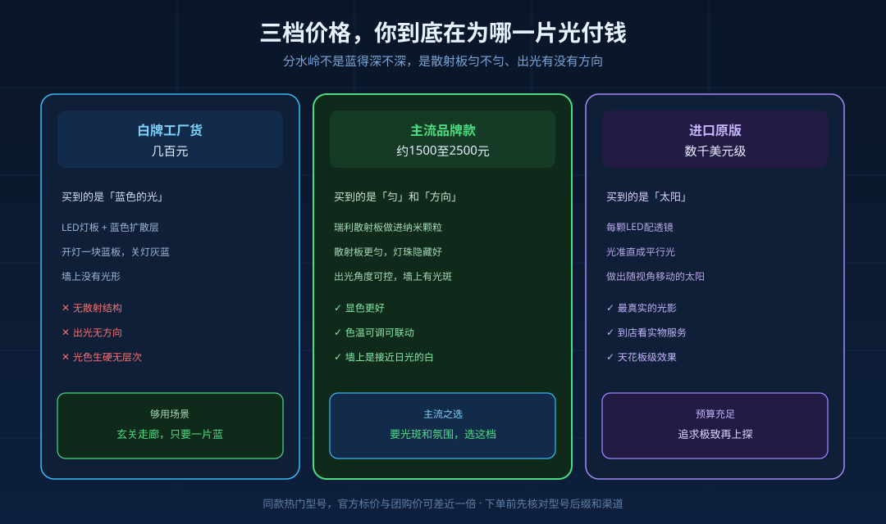

During China's Double 11 sale — the November 11 mega-sale, essentially Black Friday — a home-renovation group chat lit up with a photo. Someone had spent a little over ¥2,000 on a "skylight panel," mounted it on the ceiling, and walked out of the room only to be stabbed in the eyes by the light overhead. Hundreds of replies rolled in. Half said, "mine does that too." The other half said, "you put it in the wrong place."
I have been working around light fixtures for more than a decade, and I see posts like this constantly. Here is the uncomfortable truth: a skylight panel almost never fails because the lamp itself is broken. It fails because three questions went unasked before the purchase. A ¥2,000 unit and an ¥800 unit, installed in the wrong place, will fail in exactly the same way. The blue is never the thing that separates them.
First, understand what you are actually buying: a window, not a lamp
A skylight panel is not a lampshade with a picture of the sky printed on it. That patch of "sky" comes from Rayleigh scattering. Engineers embed nano-scale particles into the panel so that short-wavelength blue light scatters in every direction, while the light passing through the plate stays close to daylight white. The result is the whole trick: you look up and see blue, but the light spilling onto your wall is white. That is what makes it read as a real window rather than a lit ceiling tile.
The cheap version skips the physics. It is an LED panel plus a blue diffusion layer: switch it on and you get a glowing blue rectangle, switch it off and you get a gray-blue rectangle, and at no point does it throw a visible shape of light onto the wall. Some of the very cheapest are nothing more than RGB color mixing — the color is flat, harsh, and has no depth to it.
So memorize one sentence before you open your wallet: a skylight panel sells you "a window that appears out of nowhere in a dark room," not illumination. If your plan is to use it to light a worktable, you have bought the wrong category of product from the very start.

Where the extra money goes: the blue is cheap, the direction is not
The prices are absurdly spread out — from a few hundred yuan to thousands of dollars for an imported unit — but once you take them apart there are really only three tiers.
| Tier | Typical price | What you actually get |
|---|---|---|
| White-label factory stock | A few hundred yuan | A blue diffusion layer; it lights up, it looks blue, and there is no light shape on the wall |
| Mainstream brand models | Roughly ¥1,500–2,500 | A more even scattering panel, controllable output angle, better color rendering, and a visible light patch on the wall |
| Imported originals | Thousands of dollars | A lens over every single LED, collimating the light into parallel beams, which can produce a "sun" that moves as your viewing angle changes |
The first real dividing line is not "how deep is the blue." It is whether the scattering panel is even, and whether the light has a direction at all. The low tier buys you "blue light." The middle tier buys you panel uniformity and hidden LEDs, so the dots disappear. Only the top tier buys you lens optics and the ability to tie the panel into smart-home scenes.
There is one more line item people forget: the sales channel. I have seen the same popular model listed at an official price and a group-buy price that differ by nearly a factor of two. Before you order, check the channel and the exact model suffix — do not just look at the headline number.
Four ways these installs go wrong — and none of them is "the sky isn't realistic enough"
After reading more than twenty complaint threads, I noticed something. Very few people actually complain that the fake sky looks fake. Every real failure is structural.
One: using it as the main light. This is by far the most common mistake. A popular model pushes 80W of power yet delivers only 2,600 lumens, while a plain 48W ceiling lamp from the same brand puts out 3,000 lumens. A meaningful chunk of those extra watts goes toward "making the sky blue," not toward lighting your table. One user measured a 5-square-meter kitchen and found almost no usable illumination beneath the panel — worse than a 20W flat-panel light. Think of it as the icing, never the rescue. It is excellent at adding a window to a room that already has one source of light, and poor at being that source.
Two: wrong orientation and wrong cutout, which earns you a blinding glare. The light from a skylight panel is meant to strike a matte white wall at an angle and bounce back to fill the room. Aim it at glass, a mirror, a doorway, or the direction people walk in from, and you get direct glare. Keep the output off shiny surfaces and out of the entry sightline. That is a hard rule for both manufacturers and installers, and the one most often ignored.
Three: fighting the ceiling cavity. A conventional panel body is 15–20cm thick, and installers want at least 20cm of clearance above the ceiling. Flush-mount, deep-recessed, and borderless versions demand even more. People who leave 19cm discover, at the very end of the job, that the thing simply will not fit. Only in the last couple of years have ultra-thin 4–9cm side-emitting and surface-mount models arrived to rescue awkward ceilings. With an aluminum-tile ceiling, the installer can usually drop it in without drama. With drywall, you need to cut a hole and pre-install the mounting hardware, and hanging brackets are frequently sold separately. One small but painful detail: tell the installer not to seal the magnetic trim with permanent silicone, or taking it apart later becomes a nightmare.
Four: the black hole when you switch it off. If you want "eternal clear skies," you have to accept "no window when the light is off." Settle that expectation before you buy. Some people love the effect; others find the dark rectangle above them unsettling once the novelty fades.

Before you order, ask the questions in reverse
Most people spot a lamp they like and then figure out where to put it. With a skylight panel you have to run that sequence backward.
Start with the scene. Is this room genuinely dim for long stretches of the day — almost a darkroom? Think bathrooms, kitchens, stair landings, basements, and entry halls. Install one in a room that already has good daylight and you have created the single most likely candidate for "the ugliest thing in our new home." The illusion only works against a dark backdrop.
Then check the ceiling. Do you have the full 20cm of clearance? Is it aluminum tile or drywall? Will you need to buy hanging brackets separately? Measure twice; this is the constraint that decides whether the install is a five-minute job or a renovation.
Then check the orientation. Is the output aiming at a matte white wall? Keep the distance from the emitter to the wall between 1.4 and 1.7 meters — that is the sweet spot. Push it past 1.8 meters and you lose roughly forty percent of the brightness. A few centimeters here matter more than a more expensive panel.
Only then talk price. If all you want is a blue patch overhead that photographs well, a few-hundred-yuan model with a real scattering panel is enough. If you want a crisp light spot on the wall, color temperature that shifts between morning and evening, and smart-home linkage, then look at the brand models. And when choosing the panel size, go bigger rather than smaller.
If you cannot answer any one of those four questions, do not place the order yet.

Three questions, three answers
Can a skylight panel be the main light in a bathroom? I would not recommend it. It is an ambient fixture. Even in a dark bathroom, keep one basic lighting circuit alongside it. If you install only the panel, turning it all the way up still will not light the room properly.
Are the few-hundred-yuan ones a rip-off? Not necessarily. Go in knowing that what you are getting is "a patch of blue," and use it for atmosphere in an entryway or hallway — a few hundred yuan is perfectly adequate there. The people who feel cheated are the ones who buy it expecting a real sky.
If the result is disappointing, can it be fixed? Orientation and distance problems can still be adjusted. Insufficient ceiling depth or a wrongly placed cutout generally means doing the work over. That is exactly why you should measure one more time before ordering, not after.
A skylight panel is a good product. But it is built for a room with no window, not for a person trying to save the cost of one lamp. Get the scene, the ceiling, the orientation, and the price band lined up, and it becomes a window that appeared on your ceiling out of nowhere. Get them wrong, and it becomes a ¥2,000 lesson.